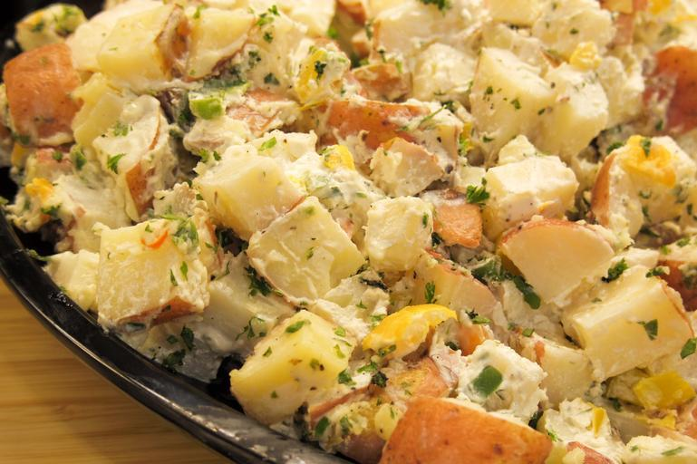

Red potato salad
Ingredients
- 2 pounds red potatoes
- 1/3 cup extra virgin olive oil
- 2 tablespoons grainy dijon mustard
- 1 tabelspoon fresh lemon juice
- 1 tablespoon mayo
- 1 tablespoon white wine vinegar
- 3 garlic cloves grated
- ground black pepper
- 4 celery stalks chopped
- 3 scallions chopped
- 1/4 cup chopped fresh chives
- 1/4 cup chopped dill
Instructions
- Place the potatoes in a large pot and cover with water by an inch. stir in 2 tablespoons salt and bring to a boil, then reduce to a simmerfor 5-10 or until fork tender.
- in a medium bowl whisk together olive oil, mustard, lemon juice, mayo, vinegar, garlic, salt, and pepper
- transfer potatoes to a large bowl then cover with dressing and stir. then add celery, scallions, chives, dill and stir to combine. Refridgerate for atleast 1 hour